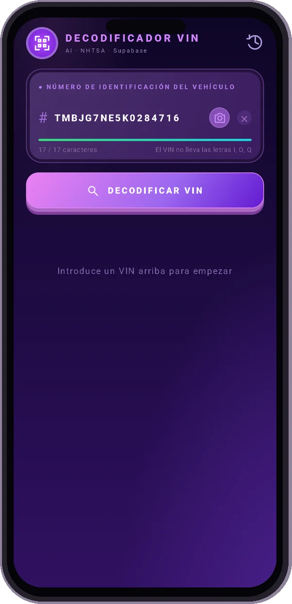
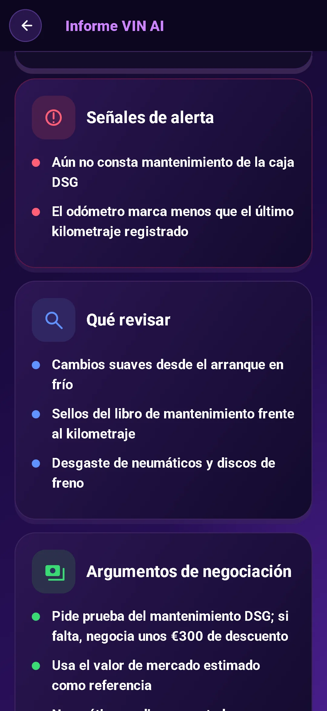
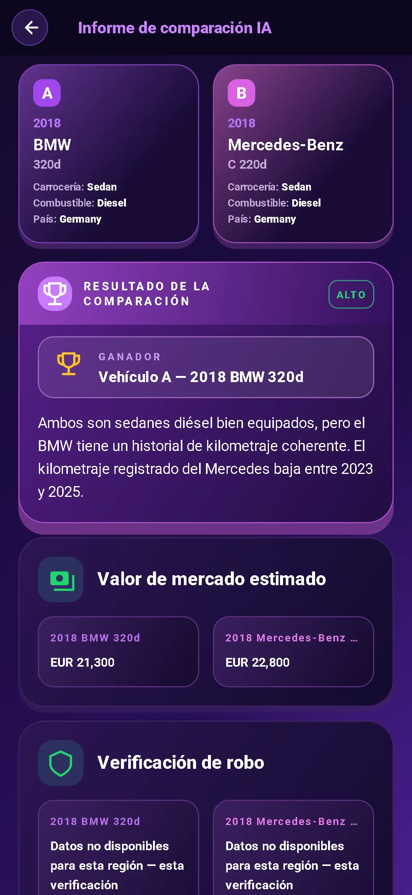

Escanea el VIN
Apunte su cámara al VIN o escríbalo. Comience con una verificación gratuita del VIN de las especificaciones básicas del vehículo.
Ese auto usado tiene una historia. Comience con su VIN.
Obtenga las especificaciones, detecte las señales de alerta y entre preparado a la conversación.
Vista previa bloqueada. Los datos disponibles varían según el vehículo y la fuente.
Descárgala en Google PlayDecodificación gratuita de VIN. Informe completo de IA del $3.99. Sin suscripción.

Vaya más allá de una búsqueda de VIN. Convierta los detalles en preguntas que valga la pena hacer.
Apunte su cámara al VIN o escríbalo. Comience con una verificación gratuita del VIN de las especificaciones básicas del vehículo.
Consulta el motor, el acabado, la tracción y otros datos. Revisa las campañas de seguridad, las quejas de propietarios y las valoraciones de choque de NHTSA, además del consumo de EPA.
Ver valor de mercado e información de kilometraje. Ponga el precio de venta en contexto antes de comenzar a negociar.
Recibe una recomendación de IA: comprar, actuar con cautela o descartar, con una puntuación de inspección, posibles puntos débiles y aspectos que revisar en persona.
Trae mejores preguntas al vendedor. Utilice consejos de inspección y sugerencias de negociación para planificar su próximo paso.
Charle con el asistente de IA, incluso sobre fotos. Obtenga ayuda para comprender los detalles en cualquiera de los 10 idiomas admitidos.


Compara dos coches en paralelo. Consulta sus características y los análisis de IA para valorar sus ventajas y desventajas antes de ir a verlos.
Busque el VIN de 17 caracteres en el parabrisas, el marco de la puerta o los documentos del vehículo.
Revise las especificaciones decodificadas y obtenga un informe de IA con riesgos, preguntas y consejos prácticos.
Haz las preguntas adecuadas. Comprueba los documentos. Organiza una inspección antes de comprar.
Compra única. No se necesita suscripción.
¿Solo necesitas lo básico? La decodificación VIN es gratuita en la aplicación.
Sepa lo que obtendrá antes de revisar su próximo automóvil.
Un número de identificación de vehículo (VIN) es un identificador único de 17 caracteres que se utiliza en los vehículos modernos. Un decodificador VIN convierte ese identificador en especificaciones del vehículo, como modelo, motor y transmisión.
Mire la parte inferior del parabrisas del lado del conductor, en el marco de la puerta del conductor o en los documentos de registro y seguro del vehículo. En la aplicación, escanéalo con tu cámara o escríbelo.
El informe completo de IA incluye características decodificadas, una recomendación de comprar, actuar con cautela o descartar, puntuación de inspección, señales de alerta, puntos que revisar, preguntas para el vendedor y consejos para negociar. La app también ofrece valor de mercado y datos de kilometraje, campañas de seguridad, quejas de propietarios y valoraciones de choque de NHTSA, además del consumo de EPA. La cobertura y disponibilidad dependen del vehículo y de la fuente.
La decodificación básica de VIN es gratuita en la aplicación. Un informe completo de IA cuesta $3.99 como compra única, sin necesidad de suscripción.
¿Quieres esto para TU auto? Ingrese su propio VIN en la aplicación.
Descárgala en Google PlayDecodificación básica gratuita · Informe completo de IA $3.99 · No se necesita suscripción